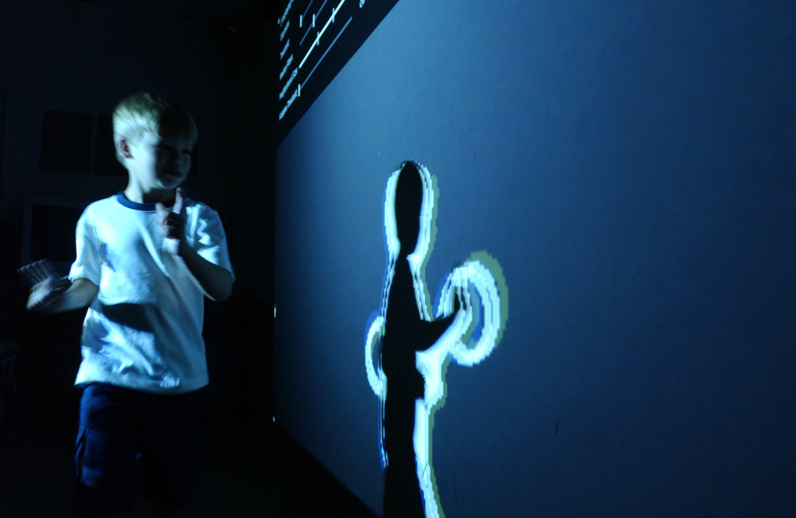

Introduction
Gesture-based interfaces are an emerging technology that is transforming the way humans interact with machines. Unlike traditional interfaces, which rely on physical devices such as keyboards, computer mice and touchscreens, gesture-based interfaces allow users to control technological systems through natural body movements. These gestures can involve different parts of the body, especially the hands, fingers, arms and face. According to Wikipedia, gesture recognition is a field of computer science that focuses on identifying and interpreting human movements through mathematical algorithms. The main purpose of this technology is to create a more natural and intuitive connection between humans and computers. By reducing the need for physical contact with devices, gesture-based interfaces make interactions faster, more flexible and accessible. They represent an important step towards a future in which communication with machines becomes increasingly similar to human communication.

How Gesture-Based Interfaces Work
Gesture-based interfaces work through a combination of cameras, sensors, computer vision and artificial intelligence algorithms. These technologies capture the user's movements and analyse them to understand which action or command is being performed. For example, a camera can detect the movement of a person's hand, while specialised software interprets that movement as an instruction to open an application, move an object or change a setting. There are different types of gestures, including hand gestures, facial expressions and full-body movements. Some systems also use wearable devices equipped with sensors to track movements more accurately. Another important application is sign language recognition, which aims to help computers interpret hand movements and improve communication with people who use sign language. This technology allows users to interact with digital devices without always needing to touch a screen or press physical buttons.
Applications and Future Developments
Gesture-based interfaces are already being used in several areas of modern technology and have the potential to become even more important in the future. In the entertainment industry, video game systems allow players to control characters and interact with virtual environments through body movements. In smart homes, gestures can be used to control lights, televisions and other electronic devices without touching them. In healthcare, this technology could allow surgeons and medical professionals to interact with digital images and information while keeping their hands free. Furthermore, gesture recognition is particularly useful in virtual reality and augmented reality, where users can manipulate virtual objects through natural movements. However, some challenges still need to be addressed, including recognition accuracy, different lighting conditions, accidental gestures and the ability to understand complex movements. Despite these limitations, continuous improvements in artificial intelligence and sensor technology could make gesture-based interfaces more reliable and widespread. Ultimately, they could contribute to a future in which humans communicate with machines in a more natural, intuitive and contactless way.
Sources (APA Style)
- Wikiopedia Contributors. Wikipedia contributors. (n.d.). Gesture recognition. Wikipedia. https://en.wikipedia.org/wiki/Gesture_recognition . Article Link
- Wikiopedia Contributors. Wang, J., Ivrissimtzis, I., Li, Z., & Shi, L. (2025). Hand gesture recognition for user-defined textual inputs and gestures. Universal Access in the Information Society, 24, 1315–1329. https://doi.org/10.1007/s10209-024-01139-6 . Article Link